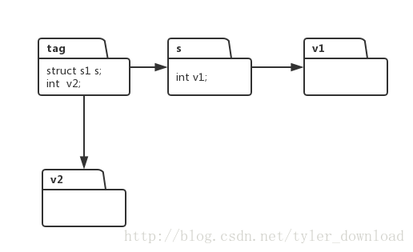

更详细的讲解和代码调试演示过程，请参看视频
用java开发C语言编译器
上节，我们完成了解释器对结构体的解释和执行，从而我们的C语言解释器基本上拥有了运行含有结构体的C语言程序的能力，关于结构体，我们还有一点需要解析的，那就是间套结构体，例如下面的C语言程序：
void main() {
struct s1 {
int v1;
} ;
struct s2 {
struct s1 s;
int v2;
}
struct s2 tag;
tag.s.v1 = 1;
tag.v2 = 2;
printf("set filed v1 of struct s1 to value : %d, and v2 of tag to value : %d", tag.s.v1, tag.v2);
}
上面的程序中，我们先定义一个结构体为s1, 然后再定义第二个结构体s2, s2的特点是，在它体内包含了结构体s1, 也就是产生了结构体的间套。我们上一节的代码已经支持了结构体间套的执行，但我觉得，其中的逻辑还是需要进一步解释清楚。

根据上一节的理论，我们知道，结构体变量所对应的Symbol对象，它包含了一个链表，这个链表把结构体里面的变量串联起来，当要访问结构体的某个子域时，先找到该结构体的 Symbol对象，从该对象中得到子域链表，再从链表中，根据要访问的子域的名称，找到子域对应的Symbol对象，那么对结构体子域的读写可以直接转换成子域Symbol对象的读写。
当结构体的定义含有间套时，也就是一个结构体内部又定义了另一个结构体，上面的步骤就得反复进行，例如代码中的语句：
tag.s.v1 = 1;
解释器在解读上面语句时，先找到tag对应的Symbol对象，然后从该对象中找到子域的Symbol列表，接着利用子域的名称”s”, 在列表中找到对应的Symbol对象，从这个对象中再次获得子域链表，然后根据子域的名称”v1”,从列表中查找到字符串名称为”v1”的Symbol对象，于是任何对 tag.s.v1 的访问都转换为v1对应的Symbol 对象。
根据上节讲述，对结构体子域的查找为如下代码片段，其位于UnaryNodeExecutor.java中，代码如下：
public class UnaryNodeExecutor extends BaseExecutor{
@Override
public Object Execute(ICodeNode root) {
executeChildren(root);
int production = (Integer)root.getAttribute(ICodeKey.PRODUCTION);
String text ;
Symbol symbol;
Object value;
ICodeNode child;
switch (production) {
....
case CGrammarInitializer.Unary_StructOP_Name_TO_Unary:
child = root.getChildren().get(0);
String fieldName = (String)root.getAttribute(ICodeKey.TEXT);
symbol = (Symbol)child.getAttribute(ICodeKey.SYMBOL);
Symbol args = symbol.getArgList();
while (args != null) {
if (args.getName().equals(fieldName)) {
break;
}
args = args.getNextSymbol();
}
if (args == null) {
System.err.println("access a filed not in struct object!");
System.exit(1);
}
root.setAttribute(ICodeKey.SYMBOL, args);
root.setAttribute(ICodeKey.VALUE, args.getValue());
break;
}
....
}
....
}在解读语句 tag.s.v1 时，上面的代码会执行两次，第一次是解读tag.s的时候，解释器通过字符串tag找到对应的Symbol， 然后从中获得子域链表，接着利用字符串”s”在子域链表中查找对应的Symbol对象，这就是上面代码while循环所做的工作。
第二次是解读s.v1的时候，上面的代码会根据s所对应的子域链表，通过字符串v1查找对应的Symbol对象，以后任何对tag.s.v1的访问都会转换成对该Symbol对象的访问。
如果存在多层结构体间套，上面的代码会反复执行，直到找到最底层的子域所对应的Symbol对象。
我们的解释器解释执行上面的C语言代码后结果如下：
set filed v1 of struct s1 to value : 1, and v2 of tag to value : 2通过结果来看，我们的解释器支持结构体的间套定义，并支持对间套的结构体进行正确的读写。
更多详细的讲解和代码调试演示，请参看视频。
更多技术信息，包括操作系统，编译器，面试算法，机器学习，人工智能，请关照我的公众号：